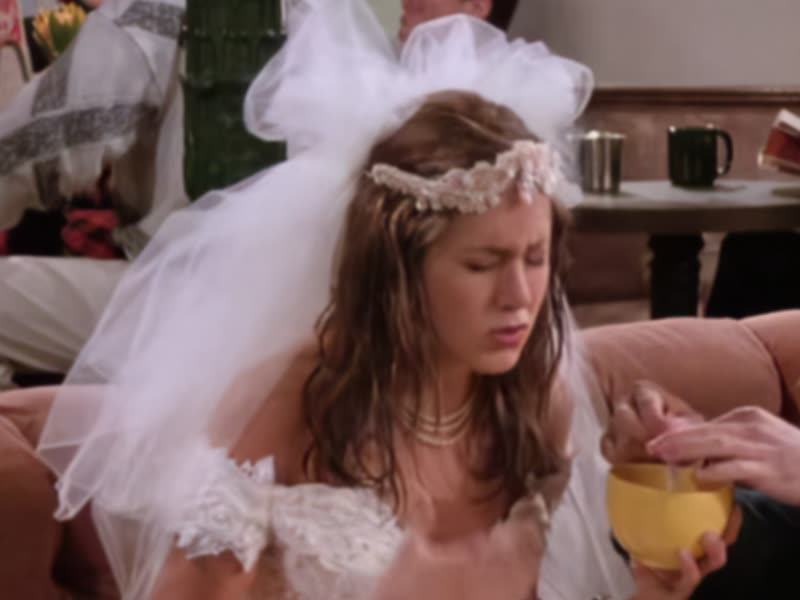

05:44Rachel 婚纱 → 浴袍 → 围裙
从自己的婚礼上逃走的新娘
初登场是完整的白色婚纱与头纱；当晚换成粉色浴袍抱着那件婚纱；最后一幕系着围裙、穿牛仔衬衫端咖啡壶。她的服装线本身就是这一集的人物弧线。
临场脱逃被娇养
情绪外放正在学着长大
背景（本集交代）：与 Monica 是 Lincoln High 的老同学，多年没联系； 未婚夫叫 Barry Finkel；本该去阿鲁巴的蜜月取消了；决定住进 Monica 家； 面试被拒 12 次后当上服务员；此前从没煮过咖啡。
性格：她的崩溃是全速的——语气标注里她反复是"高音、语速快、喊叫"， 但崩完能立刻自己收拾好（用纸袋换气之后一句"我好了"）。她逃婚的理由讲得毫无逻辑， 可她在电话里给父亲的那个比喻却精准得惊人：她不反对当鞋，她反对的是从没人问过她想当什么。
"我这辈子所有人都在跟我说'你是一只鞋'！那要是我不想当鞋呢？要是我想当一个包、一顶帽子呢？……这是个比喻，爸爸！"07:06 – 07:24 · 语气：喊叫 / 高音 / 语速极快